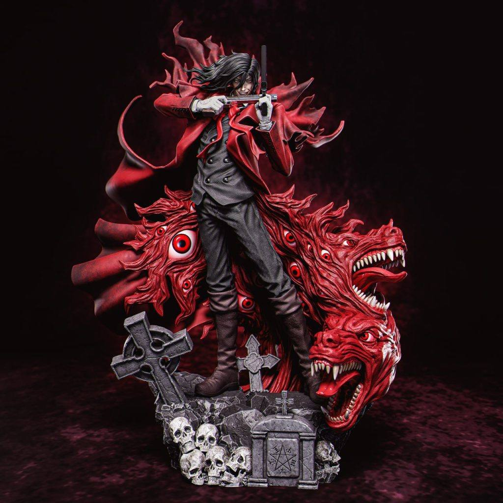
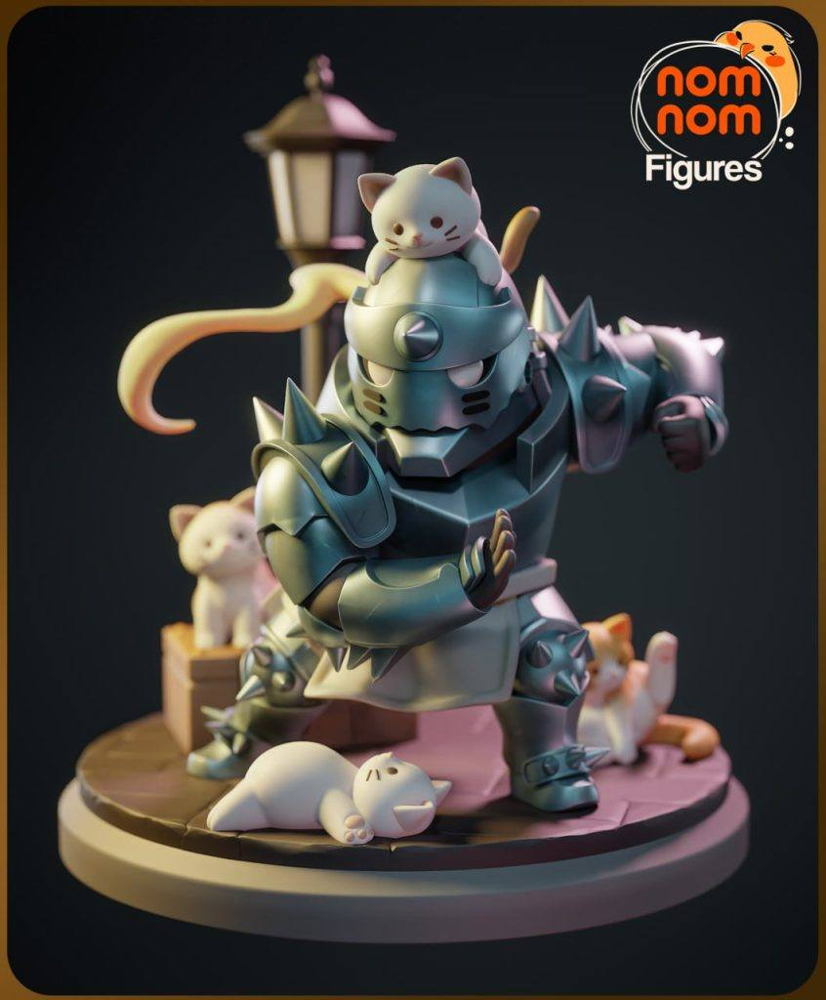
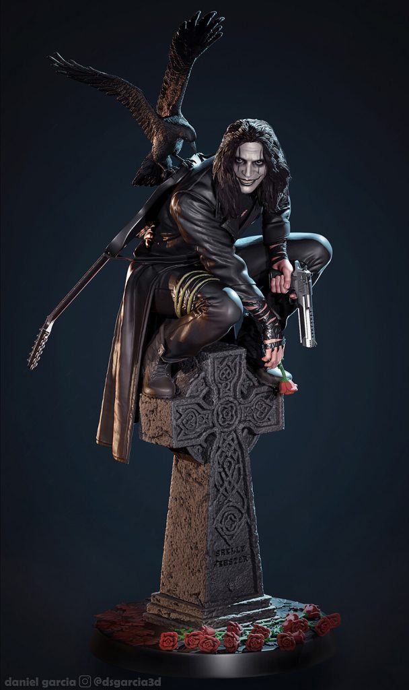

模型分享
2025年02月23日STl图纸文件分享
今天分享六组模型，各具特色。包括《女神异闻录5》的主角雨宫莲，神秘而充满魅力；经典童话人物爱丽丝，造型梦幻；以及《钢之炼金术师》的阿尔冯斯·艾尔利克，铠甲细节精致，完美还原。弗兰肯斯坦的形象独具风格，充满哥特气息。《皇家国教骑士团》相关模型展现了其独特的暗黑风格，适合粉丝收藏。最后，还有象征神秘与预兆的乌鸦雕像，艺术感十足。





链接: https://pan.baidu.com/s/1AMr6Z-4E5eVO5sNtAMAYFQ 提取码: ufnr
以上内容仅供个人使用（非商用）
ONLY for PERSONAL (NON-COMMERCIAL) use.
加群获得更多免费模型！